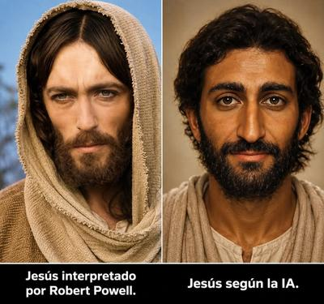

Hay algo muy curioso en el cristianismo: más de dos mil millones de personas reconocen de inmediato a Jesús cuando lo ven, sin que nadie sepa realmente cómo era. Para ellos Jesús tiene todas las características físicas de un europeo, porque ese es el Jesús que la imaginación artística decidió fabricar. Pero del personaje conocido como Jesús de Nazaret, si realmente existió, no tenemos ninguna descripción física de fuente original. Así que la humanidad terminó creando millones de retratos de un hombre cuyo rostro nadie conoce.


Las primeras representaciones sobre Jesús aparecen siglos después de la época en que supuestamente vivió, modificándose su aspecto conforme cambiaban las sociedades y los artistas que lo representaban. No existe un retrato, busto, moneda, estatua de Jesús realizados durante su vida, por lo que los artistas tuvieron que hacer lo que hacen cuando carecen de una idea del personaje que quieren representar: inventarlo. De esta forma, durante siglos, Jesús adquirió las características físicas que resultaban familiares a quienes lo pintaban, y aquel judío del siglo I fue convertido, dependiendo del lugar y la época, en un personaje con apariencia bizantina, italiana, española, germánica o anglosajona, pareciéndose sospechosamente a la población que lo estaba representando.
Ya en tiempos modernos, la industria cinematográfica continuó haciendo lo mismo. Curiosamente, para millones de personas, una de las imágenes más reconocidas de Jesús es la del actor británico Robert Powell, protagonista de la miniserie Jesús de Nazaret (1977), cuyo personaje tenía los ojos azules, cabello largo y liso, y una apariencia física muy alejada de lo que cabría esperar de un judío campesino del siglo I; pero su actuación fue tan poderosa visualmente, que terminó convirtiéndose en Jesús para muchas personas.
Pero Powell no fue el primer «Jesús» famoso: durante décadas ha circulado el rumor de que César Borgia, hijo ilegítimo del papa Alejandro VI, sirvió de modelo a Leonardo da Vinci para «retratar» a Jesús. Lo irónico es que César Borgia fue uno de los personajes más célebres del Renacimiento por sus intrigas políticas, ambiciones y brutalidad. Sin embargo, hay que aclararlo, no existe evidencia de que haya sido el modelo del Jesús de Leonardo.
Y algo parecido ocurre con Tommaso Cavalieri, joven aristócrata italiano estrechamente vinculado a Miguel Ángel. Se ha especulado que pudo inspirar las representaciones del Jesús del célebre artista italiano, pero tampoco tenemos evidencia. Lo que sí podemos afirmar es mucho más demoledor: los artistas representaron a Jesús utilizando modelos, convenciones estéticas e ideales de belleza de sus propias épocas. De tal forma que cuando alguien enciende una vela frente a una pintura de Jesús de Leonardo da Vinci o de Miguel Ángel (o al retrato de Robert Powell caracterizando a Jesús), no lo hace ante una imagen real o al menos aproximada de aquel judío galileo del siglo I.
Y esto nos hace reflexionar que sobre Jesús no sabemos prácticamente nada básico: El nombre Jesús con el que es invocado por sus creyentes, no existía en tiempos de este personaje, sino Yeshua, palabra que significa «Yahvé salva» o «Yahvé es salvación», muy sospechoso para quien se le atribuiría el papel de Salvador. ¿Y no es que se llamaría Emanuel, que significa «Dios con nosotros», tal como lo pidió el ángel a José? (Mateo 1:23) ¿En qué fecha nació? ¿Qué hizo entre los 12 y 30 años de edad? Y mucho menos sabemos qué aspecto tenía. En base a Lucas (19:2-3), podría deducirse que fue un hombre de baja estatura: «Y sucedió que un varón llamado Zaqueo, que era jefe de los publicanos, y rico, procuraba ver quién era Jesús; pero no podía a causa de la multitud, pues era pequeño de estatura.» Pero en realidad no se entiende si el pequeño de estatura era Zaqueo.
Por otra parte, el hecho de que tradicionalmente se haya representado a Jesús con el cabello y la barba largos, sería consecuencia de que los sujetos consagrados a Yahvé por sus padres, llamados nazires o nazareos (como Sansón y Juan el Bautista), asumían el voto de no cortarse ni el cabello ni la barba (Números 6:2-12). Pero Jesús no era un nazir o nazareo según la descripción bíblica, y el hombre judío promedio del siglo primero usaba barba, pero no el cabello largo. En el mundo grecorromano y judío del siglo primero, el cabello largo era considerado entre los hombres una deshonra o una excentricidad. Y esto es ratificado por Saulo de Tarso (el apóstol san Pablo): «La naturaleza misma ¿no os enseña que al varón le es deshonroso dejarse crecer el cabello?» (1 Corintios 11:14). Así que tenemos aquí otra ironía: el Jesús de cabello largo conocido por los cristianos, ni siquiera encaja con las concepciones masculinas del cristianismo primitivo.
¿Y el famoso Sudario de Turín? Aunque muchos están convencidos de que es una especie de fotografía milagrosa de Jesús estando amortajado, la datación mediante radiocarbono publicada en Nature en 1989 por tres laboratorios —Arizona, Oxford y Zúrich— situó el lino del tejido aproximadamente entre los años 1260 y 1390, con un nivel de confianza del 95%, período que corresponde aproximadamente a la fecha en que la prenda fue descubierta, ya que anteriormente nadie sabía de su existencia[1].
Por otra parte, a principios de este siglo, un equipo científico especializado en técnicas modernas de antropología forense, logró reconstruir el rostro que más probablemente habría tenido Jesús, utilizando tomografías axiales computarizadas. Para ello estudiaron tres tipos de cráneos de personas semitas de la región de Galilea, y se apoyaron en ilustraciones antiguas encontradas en sitios arqueológicos, lo que les ayudó a determinar el color de la piel y el cabello. Y resultó que Jesús (de haber existido) habría sido más probablemente un hombre con tez morena, pómulos y nariz prominentes, cabello corto, rizado y negro, y una tupida barba oscura[2].
Además de que la Inteligencia Artificial ha recreado también el rostro probable de Jesús, pero basándose en las marcas de la Sábana Santa y en el análisis de los rasgos étnicos de Oriente Medio del siglo I. Sin embargo, se trata de simulaciones artísticas y matemáticas, no de su rostro real.
Pero sin duda lo más divertido de todo esto, es que actualmente los cristianos creen reconocer inmediatamente a Jesús en una nube, en una mancha de una pared, en la hoja de una planta o en una tostada de pan, cuando por efectos de la pareidolia, asocian patrones de manchas o formas con lo que parece una imagen humana de barba y cabello largo. Y millones de personas aceptan tales coincidencias como señales sobrenaturales, sin detenerse siquiera a pensar si ese era realmente el aspecto de Jesús.
En fin, las sociedades humanas no solamente inventan dioses; también fabrican sus rostros.
[Godless Freeman]
Comentarios
Comments powered by Disqus